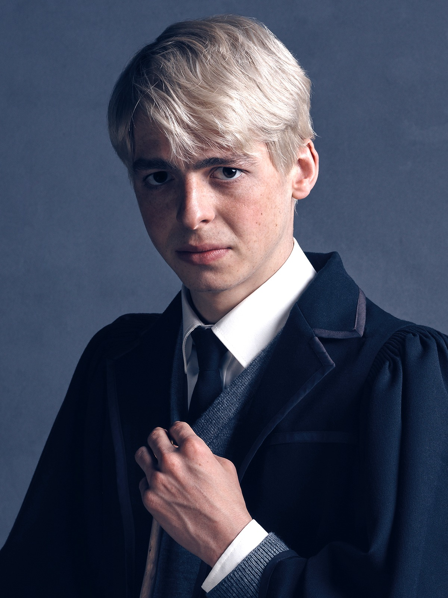

Scorpius Hyperion MalfoyAbout:1. Scorpius Hyperion Malfoy was born to Draco Lucius Malfoy and Astoria Ariana Greengrass on March 28 2006. 2. He has no siblings. 3. He was sorted into Slytherin house when he first went to Hogwarts School of Witchcraft and Wizardry in 2017, at the age of 11. 4. His godparents, as well as his uncle and aunt are Gregory Golimath Goyle and Daphane Hyna Greengrass. 5. He is a Pure blood wizard. 6. He was appointed as Prefect in his 5th year and he wasn't appointed as Head Boy or Quidditch Captain. Characteristics: 1. Silly 2. Clumsy 3. Careless Possesions: 1. Astoria's Amulet (after her death) 2.Infinite Quantity Quill (Given And Made by Lysander) 3. A 12", Willow Wood, Dragon Heartsring Core Wand 4. Nimbus 2020 (broomstick) Other Details: Eye Colour - Blue Hair Colour - Silver Blonde Height - 146cm (1st year) Height - 175cm (7th year) Species - Human Gender - Male Patronus - Non-Corpreal Boggart - Being in Gryffindor Quidditch Position - Chaser for Slytherin Favourite Colour - Aqua Nickname - Scorp Speciality - Hearing Later Life: Married To - Rose Lavender Granger Weasley Kids - Castor Draco Scorpius Malfoy (February 28, 2032), Hermia Rose Molly Malfoy (March 5, 2034), Ronaldo Perseus Albus Malfoy (December 31, 2036), Celestina Lily Lysandra Malfoy (January 1, 2037) Professions - Auror, Head of the Auror Department |
 |